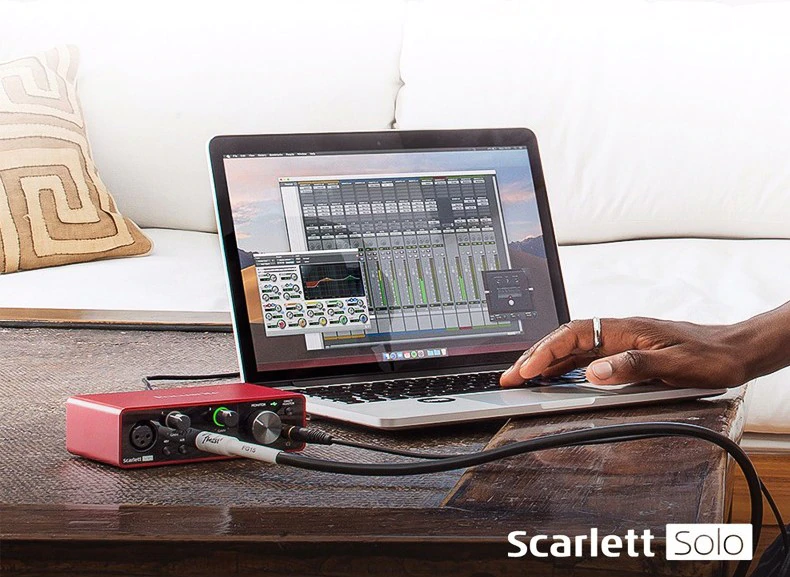
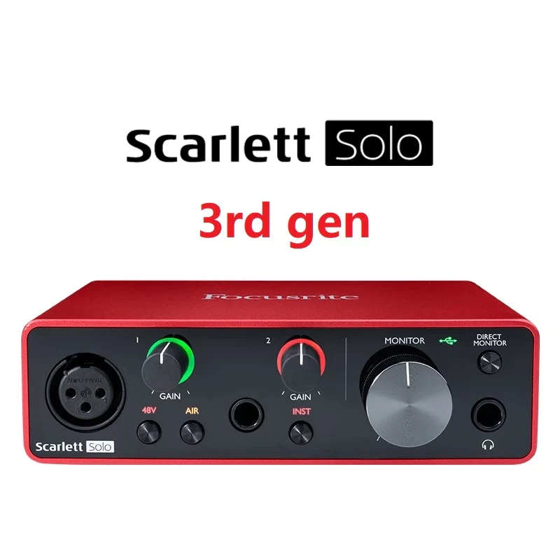

Quem Somos
- Loja: Las Eletronicos;
- Atuamos no Mercado Livre há mais de 3 anos
- Fazemos entregas em mãos para São Paulo
- Melhor preço do mercado
- Garantia Mercado Pago.
- CONTATO
 Whatsapp (11) 954221031
Whatsapp (11) 954221031 Telefone: (11) 47474507
Telefone: (11) 47474507
INTERFACE DE ÁUDIO fOSCURITE SOLO#/
R$ 1,180
FRETE GRAIS PARA TODO O BRAIL!
 Um dos pré-amplificadores de microfone com melhor desempenho que a linha Scarlett já viu, agora com o Modo de ar selecionável para dar às suas gravações um som mais brilhante e mais aberto. Uma entrada de instrumento com alto headroom para conectar sua guitarra ou baixo. Duas saídas balanceadas sem ruídos fornecem uma reprodução de áudio limpa. >>> Caracteristicas Inclui Pro Tools First pacote criativo Focusrite, Ableton Live Lite, pacote de timbres e timbres da Softube, suíte de plug-in vermelho da focusrite, assinatura de emenda de 3 meses e sua escolha de um instrumento virtual de teclas XLN Addictive grátis, disponível através de download mediante compra e registro. Conversores de alto desempenho permitem gravar e mixar em até 24 bits / 192kHz Os melhores Pré amps Scarlett de todas as gerações: Agora você pode focar na sua música sem se preocupar com a sua gravação, alinhado com os melhores conversores do mercado em 24-bit/192kHz, a terceira geração da Scarlett conta com altíssimo ganho (56dB), sem ruídos e surpreendentemente transparente. A Focusrite trabalha criando pre-amps nos últimos 30 anos e todas essas décadas de experiência tornaram a qualidade de som dessa terceira geração.
Conectividade do computador: USB 2.0 Fator de forma: Área de Trabalho E / S simultânea: 2 x 2 Número de pré-amplificadores: 1 x microfone, 1 x instrumento Phantom Power: sim Resolução A / D: Até 24 bits / 192kHz Entradas analógicas: 1 x XLR (microfone), 1 x 1/4 "(Hi-Z) Saídas analógicas: 2 x 1/4 "TRS Fones de ouvido: 1 x 1/4 " USB: 1 x tipo USB-C Programas: Ableton Live Lite, Focusrite Red Plug-in Suite, Pro Tools First Creative Pack (PT First não oferece suporte a plug-ins de terceiros) Compatibilidade: iPad Pro Requisitos do sistema operacional - Mac: macOS 10.12 ou posterior Requisitos do sistema operacional - PC: Windows 7 SP1 ou posterior (Scarlett), Windows 10 v1809 ou posterior (Pro Tools First) Alimentado por ônibus: sim Fonte de energia: Barramento USB alimentado Número da peça do fabricante: AMS-SCARLETT-SOLO-3G >>> Conteúdo da embalagem: 1 Interface Usb Focusrite Scarlett Solo 1 Cabo Usb<
Oferecemos profissionais experientes e antenados às mudanças no mundo da moda. O atendimento possui padrão de excelência e agilidade, garantindo qualidade e satisfação dos
Whatsapp (11) 954221031Telefone: (11) 47474507